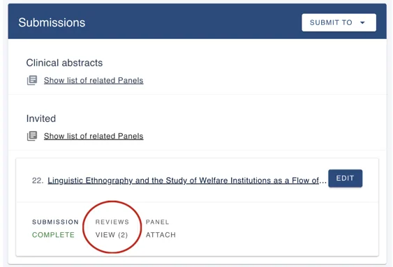
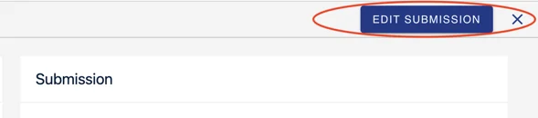

Viewing comments left by reviewers
In this article we will take you through how to view the reviewers comments left on your submission, and how to edit your abstract (if required).#
NB: The below guidance is for submitters only.
If you are a reviewer, please click here for guidance on leaving comments on submissions.
You can view our walkthrough video below, or skip to the written instructions.
How to view comments left on my submission:
-
Log into your account and navigate to your dashboard
-
In the Submissions box, click on Reviews/Views

-
This will open a new tab with your submission and reviewer comments
-
Beside each comment, you will be able to see the number of comments that have been left for that specific piece of text
How to edit my submission:
Given your event administrator has enabled the ability to edit submissions, you can do this by:
-
Select the comment icon to 'view review'
-
Select Edit submission
-
This will open up your submission form where you can start editing

If you encounter any problems with in-line comments, then please get in touch with our support team: support@oxfordabstracts.com for further assistance.
Did this page solve it?
Thanks — this helps us fix it.